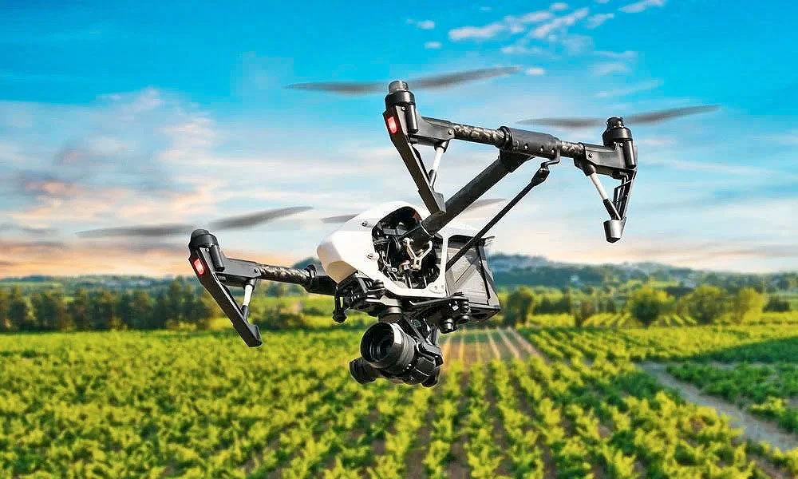
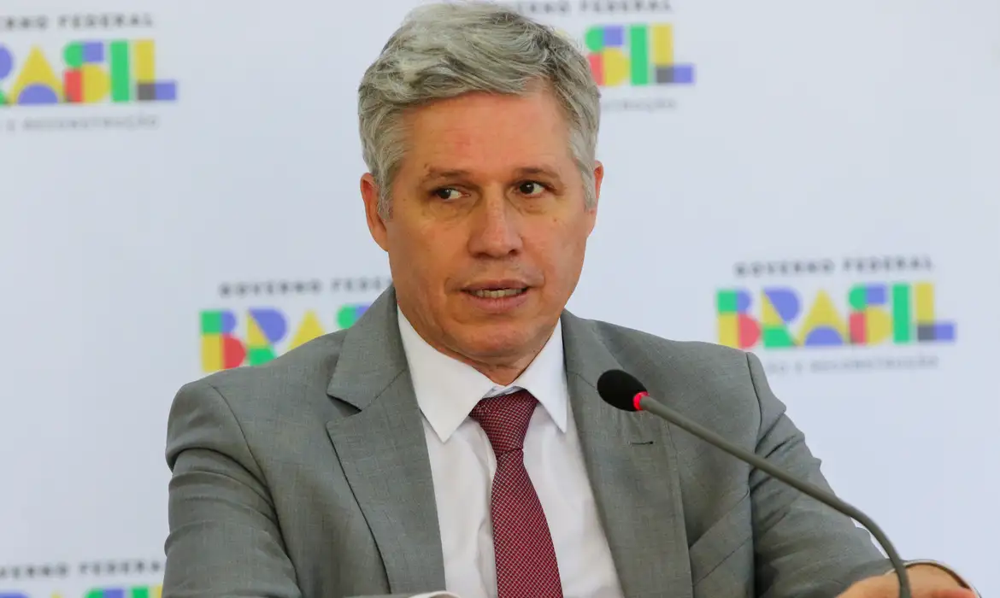

A urbanização crescente tem causado um impacto significativo nas comunidades rurais, trazendo tanto desafios quanto novas oportunidades. Com o avanço das cidades, as áreas do campo passam por transformações que afetam a forma de vida tradicional, mas também abrem espaço para o desenvolvimento econômico e social. Essa dinâmica exige um equilíbrio cuidadoso entre preservar as raízes do campo e integrar as inovações urbanas, garantindo que tanto o meio rural quanto o urbano possam crescer de maneira sustentável e harmoniosa.

O uso de drones e inteligência artificial está revolucionando a produção agrícola, aumentando a produtividade e a sustentabilidade.

Incentivos governamentais estão fortalecendo pequenas propriedades rurais e melhorando a infraestrutura local para melhorar a qualidade de vida.